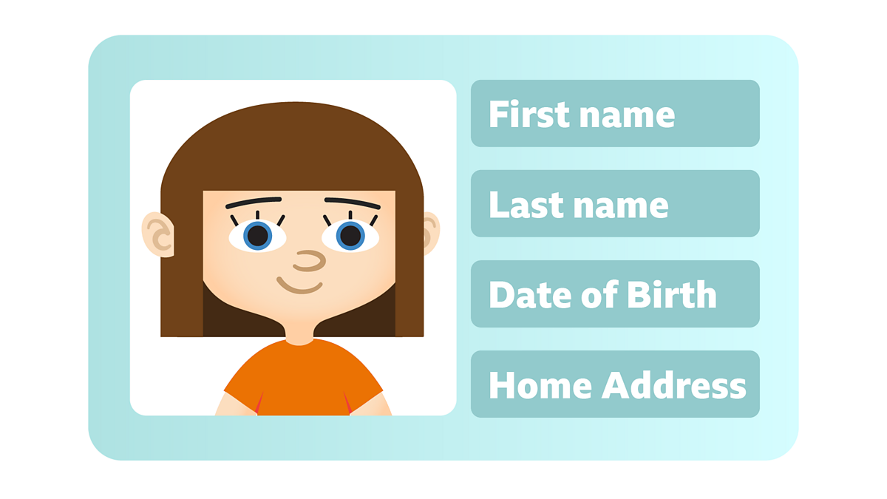

Impact
Cybersecurity can have wide ranging impacts on people's lives, and there are many aspects that people may not realize affect them. The following are some ways that Cybersecurity can impact you at an individual level:
 Personal Information: Personal information such as names, addresses, phone numbers, email addresses, social security numbers, and credit card numbers are often stored online. Cybersecurity measures help ensure that this information is kept safe from hackers and other cybercriminals who may attempt to steal it for identity theft or financial fraud.
Digital Identity: Cybersecurity helps protect digital identities, which are comprised of usernames, passwords, and other identifying information that people use to access their online accounts. Cybercriminals can steal this information through techniques such as phishing and social engineering, which can lead to unauthorized access to sensitive information.
Cyberbullying and Online Harassment: Cybersecurity measures can help prevent cyberbullying and online harassment, which can have serious psychological effects on individuals. These measures can include monitoring of online activity, blocking of offensive content, and education about safe online behavior.
Intellectual Property: Cybersecurity measures help protect individuals' intellectual property, such as patents, trademarks, and copyrights, from theft or infringement. This protection is important for creative professionals such as writers, artists, and musicians, as well as for businesses that rely on intellectual property for their success.
Cybercrime: Cybersecurity measures help prevent cybercrime, which includes a wide range of illegal activities such as hacking, phishing, identity theft, and ransomware attacks. Cybercrime can cause financial losses, damage to reputation, and other serious consequences for individuals. It is estimated that over 70 million people fall victim to cyber crimes yearly, following proper procedures online can greatly reduce the chance that you become a victim.